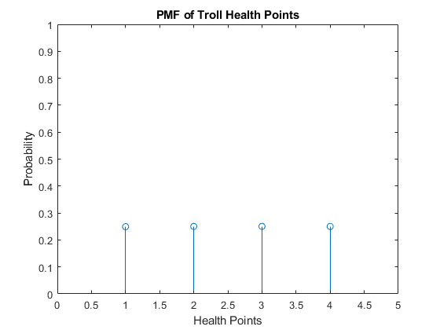
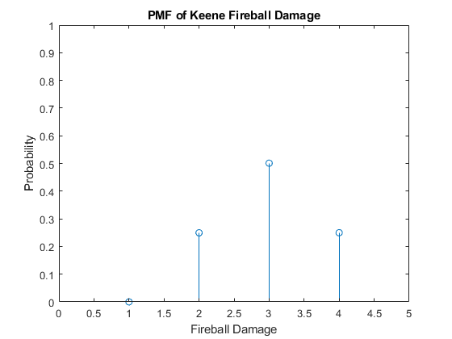

Contents
clear;
clc;
close all;
-------------Epic Question 1---------------------
N = 1000000;
Part 1a) Regular Roll for Perfect Ability Score
sampleMatrix = randi(6, 3, N);
totalVect = sum(sampleMatrix);
outputa = sum(totalVect == 18)/N;
fprintf("The Probability an 18 is rolled = %f\n", outputa)
The Probability an 18 is rolled = 0.004712
Part 1b) Fun Method for Perfect Ability Score
need = 18;
outputb = abilityScore(need, N);
outputb = sum(outputb)/N;
fprintf("The Probability an 18 is rolled in 3 tries = %f\n", outputb)
Part 1c) Fun Method for Perfect Character Creation
need = 18;
outputc = characterAbilityScores(need, N);
fprintf("The Probability of all perfect ability scores = %f\n", outputc)
Part 1d) Fun Method for Average Character Creation
need2 = 9;
outputd = characterAbilityScores(need2, N);
fprintf("The Probability of all 9 ability scores = %f\n", outputd)
-------------Epic Question 2---------------------
Part 2a) Expected Keene Damage and Troll HP
trollHP = randi(4, 1, N);
KeeneDMG = sum(randi(2, 2, N));
AvgTrollHP = sum(trollHP)/N;
AvgKeeneDMG = sum(KeeneDMG)/N;
probG3 = sum(KeeneDMG > 3)/N;
fprintf("The Average Troll HP = %f\n", AvgTrollHP)
fprintf("The Average Fireball Damage = %f\n", AvgKeeneDMG)
fprintf("Probability the fireball does more than 3 damage = %f\n", probG3)
The Average Troll HP = 2.501708
The Average Fireball Damage = 3.000305
Probability the fireball does more than 3 damage = 0.249707
Part 2b) PMF of Keene Damage and Troll HP Values
pmfTroll = zeros(1,4);
pmfKeene = zeros(1, 4);
for i = 1:4
pmfTroll(1, i) = sum(trollHP == i)/N;
pmfKeene(1, i) = sum(KeeneDMG == i)/N;
end
figure(1);
stem(pmfTroll)
title("PMF of Troll Health Points")
xlabel("Health Points")
ylabel("Probability")
xlim([0,5])
ylim([0, 1])
figure(2);
stem(pmfKeene)
title("PMF of Keene Fireball Damage")
xlabel("Fireball Damage")
ylabel("Probability")
xlim([0,5])
ylim([0, 1])
 
Part 2c) Likelihood 1 Fireball Slays all 6 Trolls
dead = 6;
[output2c, AvgHPleft2c] = fighting6Trolls(dead, N);
fprintf("Probability Keene slays all 6 trolls = %f\n", output2c)
Part 2d) Remaining Health of 1 Troll Given 5 Die
dead2 = 5;
[output2d, AvgHPleft2d] = fighting6Trolls(dead2, N);
fprintf("Expected HP remaining of troll = %f\n", AvgHPleft2d)
Expected HP remaining of troll = 1.059297
Part 2e) Expected Value of Warrior Attack
sword = zeros(2, N);
hammer = zeros(2, N);
sword(1, :) = (randi(20, 1, N) >= 11);
hammer(1, :) = (randi(20, 1, N) >= 11);
sword(2, :) = sum(randi(6, 2, N));
hammer(2, :) = randi(4, 1, N);
totalDamage = 0;
for i = 1:N
if sword(1, i) == 1
if hammer(1, i) == 1
totalDamage = totalDamage + sword(2,i) + hammer(2, i);
else
totalDamage = totalDamage + sword(2,i);
end
end
end
expectedDamage = totalDamage/N;
fprintf("Expected Damage from Warrior = %f\n", expectedDamage)
Expected Damage from Warrior = 4.126106
Outputs row vector with 1's for each successful fun method attempt and 0's for failure
function [output] = abilityScore(need, N)
totals = zeros([3, N]);
for i = 1:3
sampleMatrix = randi(6, 3, N);
totalVect = sum(sampleMatrix);
totals(i, :) = totalVect;
end
for i = 1:N
for j = 1:3
if totals(j, i) > need
totals(:, i) = zeros(1, 3);
end
end
end
totals = totals == need;
output = sum(totals) > 0;
end
The Probability an 18 is rolled in 3 tries = 0.013757
The Probability of all perfect ability scores = 0.000000
The Probability of all 9 ability scores = 0.000000
Output probabilities for a specific kind of character (6 abilities each character)
function [outputNum] = characterAbilityScores(need, N)
total = zeros([6, N]);
for i = 1:6
total(i, :) = abilityScore(need, N);
end
outputNum = sum(sum(total) == 6)/N;
end
Probability a certain number of trolls survive out of 6 & Remaining troll average health
function [outputProb, AvgHPleft] = fighting6Trolls(dead, N)
trollHP = randi(4, 6, N);
KeeneDMG = sum(randi(2, 2, N));
success = 0;
totalTrollHPleft = 0;
for i = 1:N
tmp = 0;
trollHPleft = 0;
for j = 1:6
if KeeneDMG(i) >= trollHP(j,i)
tmp = tmp + 1;
else
trollHPleft = trollHP(j, i) - KeeneDMG(i);
end
end
if tmp == dead
success = success + 1;
totalTrollHPleft = totalTrollHPleft + trollHPleft;
end
end
AvgHPleft = totalTrollHPleft/success;
outputProb = success/N;
end
Probability Keene slays all 6 trolls = 0.342868